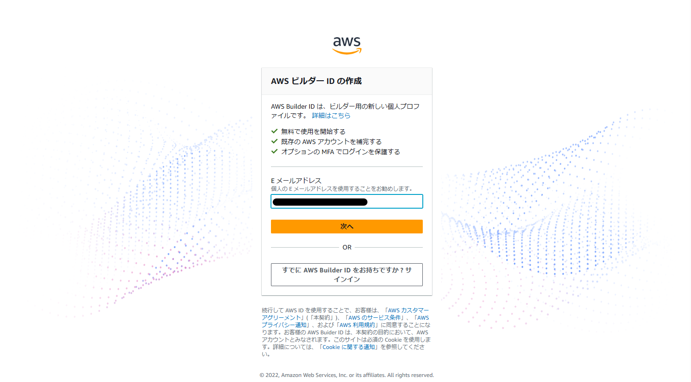
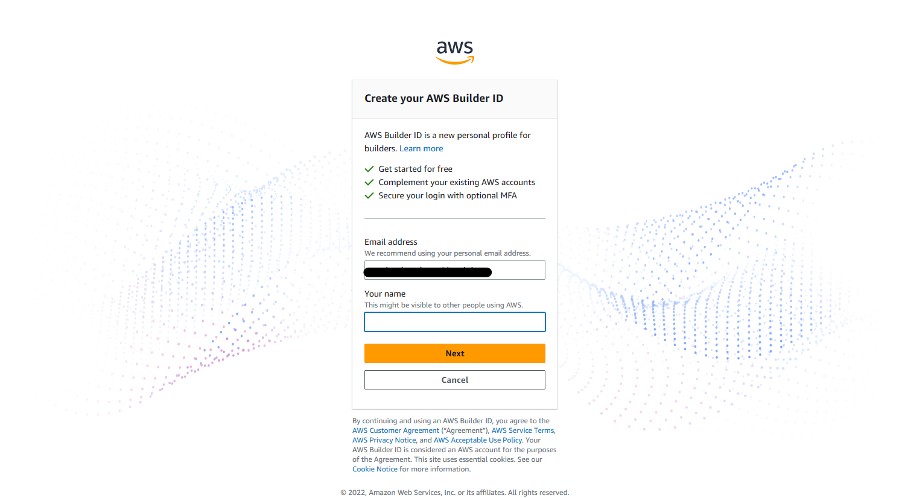
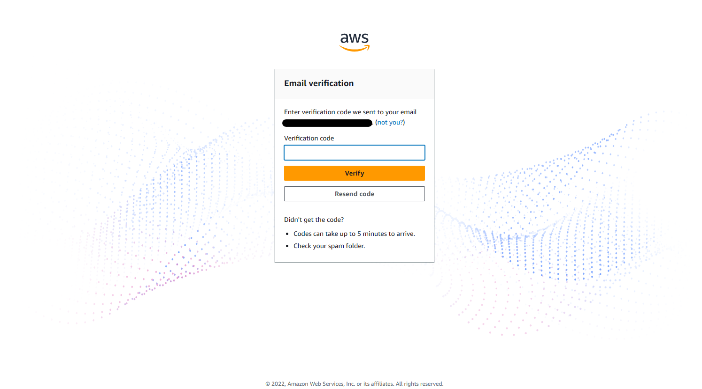
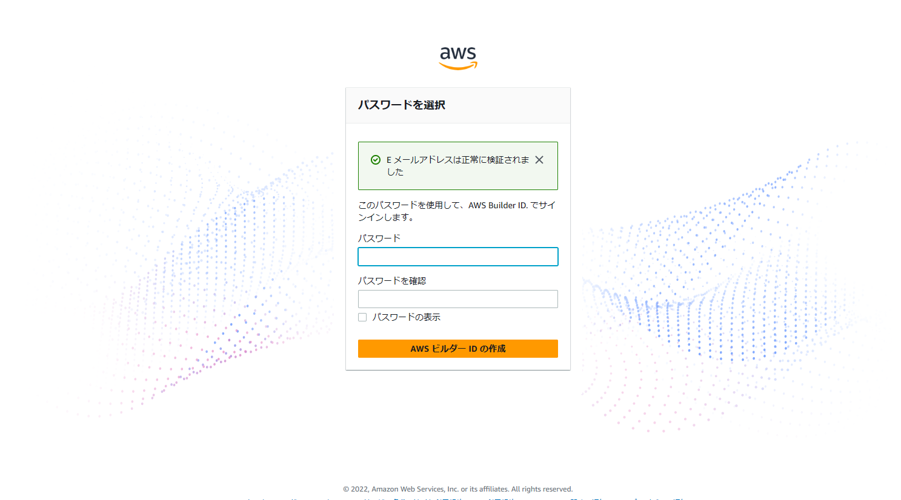

AWS CodeCatalyst¶
用語集¶
日本語は公式な訳ではないことに注意。
ビルダーID (AWS Builder ID)
個人単位に払いだされるID。
組織と紐づかないため、組織間を横断して使用することが可能。
スペース (space)
組織単位で管理する作業スペース。
一意のAWSアカウントと紐づけられ、発生した料金はAWSアカウントに対してなされる。
AWSアカウント毎にフリープランのスペースを1つ、スタンダードプランのスペースを5つ作成することができる。
スペース下に複数のプロジェクトを作成することができる。
プロジェクト (project)
開発プロジェクト毎で管理する単位。
issueやリポジトリ、ワークフローなど必要な機能が含まれている。
プロジェクト下に複数のリポジトリ、ワークフローを作成することができる。
フリープラン / スタンダードプラン (free tier / standard tier)
フリープランは無料のプランで、使用したリソース量が月当たりの規定値を超えた場合はスタンダードプランにアップグレードにする必要がある。
スタンダードプランは有料のプランで、使用したリソース量が月当たりの規定値を超えた場合は追加リソース料金が発生する。
リソース量は人あたりとスペースあたりの2種類があり、スペースあたりの場合はスペース内のユーザー数に関わらず、すべてのユーザーで共有される。
なお、ここでいうプランはCodeCatalystに対してのものであり、デプロイしたリソースについては別途料金が発生する。
コンピューティング時間 (compute minutes)
ワークフローアクションが実行されてから、完了するまでの時間。ユーザーあたり。
開発環境時間 (dev Environment hours)
クラウドベースの開発環境にアクセスした時間。スペースあたり。
概要¶
CodeCatalystの目的¶
CodeCatalystは、あるいはアイデアから生産に至るまで、チームが必要とするすべてのツールとインフラを1つのシームレスな体験にまとめる、統合されたDevOpsのサービス
→ インフラまでセットなので大きな特徴と感じた。
プロジェクトのセットアップを高速化¶
ブループリント。
CI/CDパイプライン¶
ブループリント。
ワークフローはYAMLもしくはGUIで作成。
GithubActionsの利用が可能。
パイプラインの実行環境は変更可能。
レポート機能。
統合開発環境¶
ローカル開発環境を統一的に用意できる。 → セットアップの手間や環境差分問題に悩まされない。
→ あるBPはwindowsで、あるBPはMacだったとか。
ローカル環境に影響がない → 複数の環境を手間なしに併存できる
開発環境(Cloud9,VS Code, IntelliJ, GoLand, PyCharm)のみインストールで実施可能
→ AWS上に開発環境が作成されるため、お金がかかる → 課金要素
コラボレーション¶
AWS Builder IDの使用。 AWSアカウントはスペース単位で共有。 → 個人単位AWSアカウントなしで作業可能。
他Codeシリーズ/他サービスとの比較¶
コスト¶
ツールチェーンをカスタマイズできるのはよいがコストがかかる。
→ コストに見合う価値がある場合(大規模など)はよいが、そうでないケースも多い。
→ ここでいうコストとは金額だけでなく、導入や維持に必要な労力を含む。
インフラ¶
必要な環境は様々であり、本番環境以外にもテスト環境や開発者デスクトップ環境なども存在する。
→ これらをより簡単に管理したい。
他サービスとのコラボレーション¶
TBD
他統合サービスとの比較¶
TBD
制約 (2023.4.25時点)¶
現時点ではオレゴンリージョンでしか使用はできない。
作成したアプリを別リージョンにデプロイすることは可能。
ビルダーID の作成¶
利用には ビルダーID が必要となる。所持していない場合は新規に作成する。
IDに使用するメールアドレスを入力する。AWSでは個人のメールアドレスを推奨している。

ユーザー名を入力する。

入力したメールアドレスに確認コードが送信されるため、届いたコードを入力する。

パスワードを入力する。

正常に作成された場合、スペースの作成画面に遷移するため、引き続きスペースの作成を実施する。